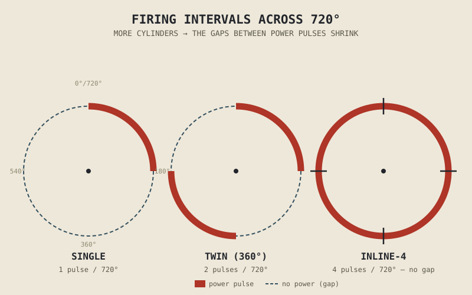

A 600cc single-cylinder engine and a 600cc four-cylinder engine can power motorcycles that are, in almost every measurable performance sense, worlds apart — one thumping out a strong, lumpy pulse of torque that peaks well under 7,000rpm, the other spinning smoothly to 14,000rpm or more, delivering its power as a continuous, almost turbine-like wave. Same total displacement. Same fundamental combustion physics from every chapter so far in this part. The difference is entirely in how that displacement got divided up.
Every chapter since Chapter 2.1 has been building the case for a single cylinder — what it does, how it breathes, how it's timed, how it's sized. This chapter is where that single-cylinder foundation finally gets multiplied, and where Chapter 2.1's early observation that "overlapping power strokes smooths out delivery" gets the full explanation it was promised.
Firing Intervals: Filling In the Gaps
Chapter 2.2 established that a complete four-stroke cycle spans 720 degrees of crankshaft rotation, and Chapter 2.1 noted that only one of those four strokes actually delivers power. In a single-cylinder engine, this means one power stroke arrives, followed by 540 degrees of crank rotation — three-quarters of the entire cycle — with no power stroke at all, bridged only by the flywheel's stored momentum described in Chapter 2.5.
Add a second cylinder, and if its power stroke is timed to land partway through that gap rather than at the same instant as the first cylinder's, the total assembly now delivers two power pulses somewhere across that same 720 degrees instead of one. Add a third or fourth cylinder, staggered the same way, and the gaps between power pulses keep shrinking. An inline four-cylinder engine, with each cylinder's power stroke evenly spaced 180 degrees apart, delivers a power pulse every quarter-turn of that 720-degree cycle — four times the frequency of a single, and dramatically smoother as a direct result. This even spacing of power pulses across the cycle is what's meant by an engine's firing interval, and it's the mechanical reason cylinder count changes how an engine feels far more than it changes anything about the combustion chemistry covered in earlier chapters.

A 720-degree crankshaft cycle shown as a circle, with power-stroke pulses marked for a single, a twin, and an inline four — visually comparing how evenly the gaps between pulses shrink as cylinder count rises.
Smaller Cylinders, Lighter Pistons, Higher Ceilings
Splitting a fixed total displacement across more cylinders has a second consequence that connects directly back to Chapter 2.8's discussion of piston speed limits. More cylinders sharing the same total swept volume means each individual cylinder is smaller, which generally means a smaller, lighter piston and a shorter stroke for that same total capacity. Chapter 2.5 already established that a piston's repeated acceleration and deceleration through each stroke is a genuine mechanical stress, and a lighter piston, moving through a shorter stroke, can be accelerated and decelerated more easily and controlled more precisely by lighter valve springs, echoing Chapter 2.6's valve-mass discussion in miniature.
This is the real mechanical reason a four-cylinder 600cc engine can safely rev to 14,000rpm or beyond while a 600cc parallel twin, and especially a 600cc single, typically cannot approach that figure: it isn't that the four-cylinder engine is inherently "better," but that dividing the same total mass and volume among more, smaller reciprocating parts directly raises the piston-speed ceiling Chapter 2.8 identified as a fundamental limit. The same total displacement, arranged as fewer, larger cylinders, trades that high-RPM ceiling for larger individual combustion events and a correspondingly punchier, lower-RPM character.
Cylinder count doesn't change how much energy a given displacement can release. It changes how that release gets divided in time and in mass — smoother and higher-revving as the pieces get smaller and more numerous, punchier and more characterful as they get larger and fewer.
What More Cylinders Actually Cost
None of this smoothness and rev potential arrives free. Every additional cylinder brings its own set of valves, its own section of camshaft, its own piston, con-rod, and set of rings, and its own share of the friction and mechanical losses Chapter 2.1 identified as counting against the one thing an engine is actually for — and more individual moving parts, even lighter ones, generally means more total friction than a single, larger equivalent, along with more components that can wear or fail. A four-cylinder engine is also inherently wider or longer than a single or twin of the same displacement, a packaging cost that matters directly to Chapter 1.2's account of how narrow a motorcycle can be, and it typically costs more to manufacture and maintain, with more parts to machine, assemble, and eventually service.
This is why cylinder count, like nearly every other number covered in this part, is a genuine design trade rather than a race to the highest figure: an engine built for smooth, high-revving performance justifies the added complexity and cost differently than an engine built to be simple, light, narrow, and inexpensive.
A Common Misconception, Cleared Up Early
It's tempting to assume that more cylinders simply means more power, the same instinct Chapter 1.6 warned against applying to horsepower figures generally and Chapter 2.8 warned against applying to displacement. For a fixed total displacement, this isn't reliably true — the combustion chemistry and thermodynamics covered throughout this part don't fundamentally produce more energy just because that same volume is divided into smaller pieces. What more cylinders reliably buys is smoothness and a higher potential rev ceiling, and since power is a function of both torque and RPM, as Chapter 1.5 established, a higher-revving multi-cylinder engine often does end up producing more peak power than a single or twin of the same displacement — but that's a consequence of the higher RPM ceiling this chapter explained, not of cylinder count directly adding energy to the equation.
Where This Leads
This chapter answered how many cylinders, and why that number matters. It deliberately left open a related but separate question: how those cylinders are physically arranged relative to each other — in a line, in a V, opposed flat against each other — which changes an engine's vibration character, width, and packaging in ways cylinder count alone doesn't determine. Chapter 2.11 takes up that question directly.
Key Concepts to Remember
- Firing interval — how evenly power strokes are spaced across the 720-degree, two-revolution cycle — is what actually determines how smooth an engine's power delivery feels, and it improves directly with cylinder count.
- Dividing a fixed total displacement across more cylinders produces smaller, lighter individual pistons, which raises the piston-speed ceiling from Chapter 2.8 and allows a higher safe RPM.
- More cylinders trade away simplicity: more parts, more friction, more width or length, and generally higher manufacturing and maintenance cost.
- Cylinder count doesn't add energy to a fixed displacement — it redistributes how that energy is released in time and mass, trading punchy, lower-revving delivery for smooth, higher-revving delivery.
- Higher peak power in multi-cylinder engines of equal displacement is a consequence of their higher RPM ceiling, not of cylinder count directly producing more power.
Cross-References
| ← Ch. 2.1 | First observed that multiple cylinders exist to overlap power strokes and smooth delivery; this chapter gives that observation its full mechanical explanation. |
| ← Ch. 2.5 | Established piston mass and acceleration as a mechanical stress; combined with Chapter 2.8's piston-speed ceiling, this chapter shows how cylinder count directly manipulates both. |
| ← Ch. 1.2 | Established motorcycle narrowness as a core design value; this chapter identifies cylinder count as a direct cost against that value. |
| ← Ch. 1.6 | Warned against raw-number comparisons; this chapter applies that warning directly to cylinder count. |
| → Ch. 2.11 | Cylinder layout — inline, V, and boxer configurations — the physical arrangement question this chapter deliberately left open. |